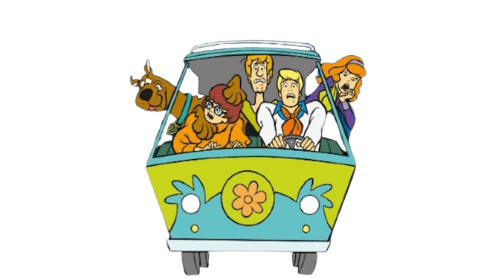
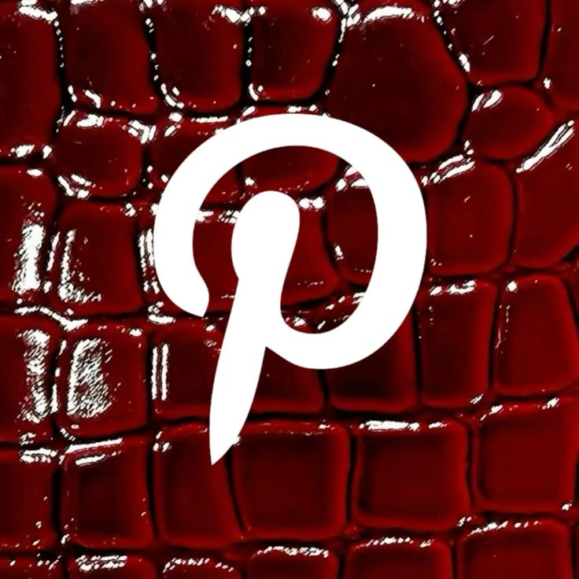

Think Before You Post: Gunakan Media Sosial dengan Bijak
Dibuat oleh : Ryanna / 94 / 28


Zaman sekarang, siapa sih yang nggak punya media sosial? Mulai dari bangun tidur sampai mau tidur lagi, kita hampir selalu ngecek HP buat liat update di Instagram, nonton video TikTok, dengerin lagu di Spotify, atau sekadar kirim pesan di WhatsApp. Media sosial emang bikin hidup kita jadi seru dan serba praktis. Kita bisa dengan mudah terhubung sama teman-teman, nemuin hal-hal baru yang keren, sampai dapet hiburan tanpa batas. Tapi di balik semua keseruan itu, kita juga harus sadar kalau dunia maya punya aturan dan risiko yang harus kita perhatikan baik-baik.
Salah satu hal paling penting saat main medsos adalah menjaga etika dan cara kita berkomunikasi. Kadang karena merasa nggak tatap muka langsung, orang jadi gampang banget ngetik komentar pedas, nyebarin gosip, atau bahkan melakukan cyberbullying. Padahal, apa yang kita ketik dan unggah di internet bakal ninggalin jejak digital yang susah banget dihilangin. Jejak digital ini bisa saja berdampak ke masa depan kita, misalnya saat mau masuk sekolah tinggi atau cari kerja nanti. Jadi, sebelum kita unggah postingan atau ketik komentar, coba deh pikirin dulu: apakah kalimat ini sopan dan nggak menyakiti perasaan orang lain?
Selain etika, masalah keamanan data pribadi juga nggak boleh dianggap sepele. Sekarang ini banyak banget kasus penipuan atau peretasan akun yang berawal dari kebiasaan pengguna yang suka asal bagikan informasi pribadi. Jangan pernah upload foto identitas, nomor telepon pribadi, alamat rumah lengkap, atau lokasi langsung saat kamu lagi di luar rumah. Jangan lupa juga buat selalu mengaktifkan fitur keamanan seperti verifikasi dua langkah (2FA) di semua akun medsos kamu biar nggak gampang dibobol sama orang jahat.
Terakhir, kita harus pintar saring informasi sebelum membagikannya. Berita bohong atau hoaks sering banget tersebar cepat cuma karena orang-orang langsung klik tombol share tanpa cek kebenarannya dulu. Kalau dapet kabar yang bikin panik atau heboh, coba cek dulu sumbernya di situs berita resmi. Jangan sampai kita ikut-ikutan jadi penyebar berita hoax yang merugikan orang banyak. Mari kita pakai media sosial buat hal-hal yang bermanfaat, saling menginspirasi, dan menyebarkan energi positif setiap hari!

Klik Aplikasi Untuk Tips & Contoh Penggunaannya!


